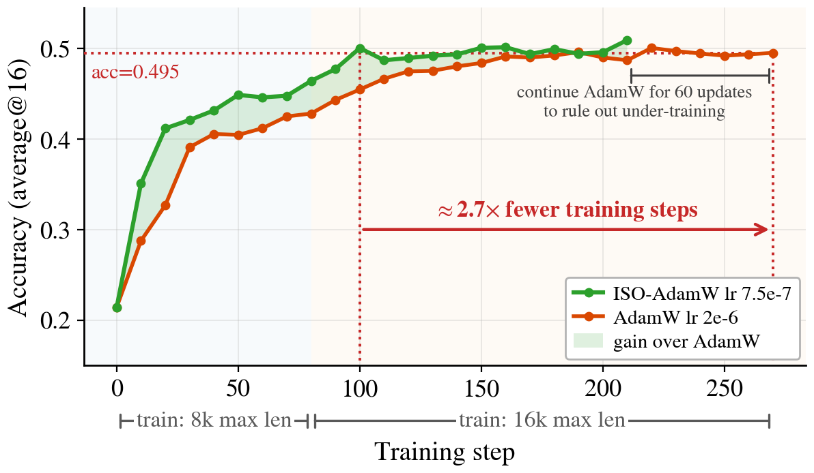
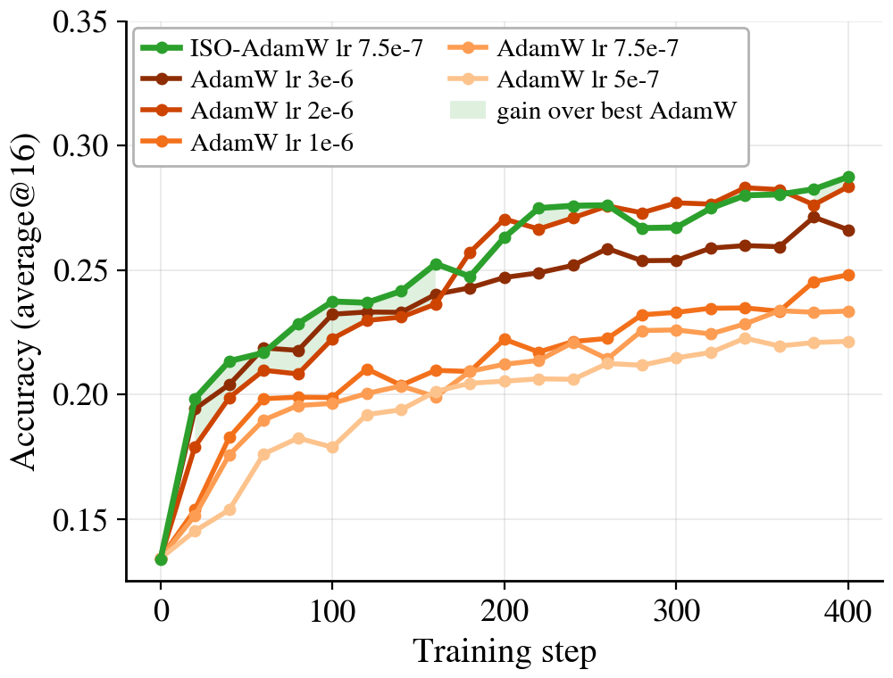
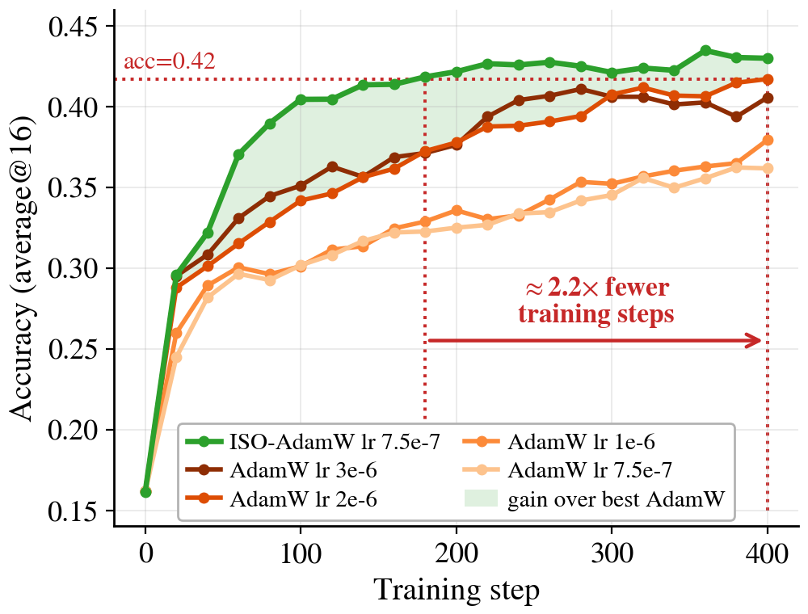
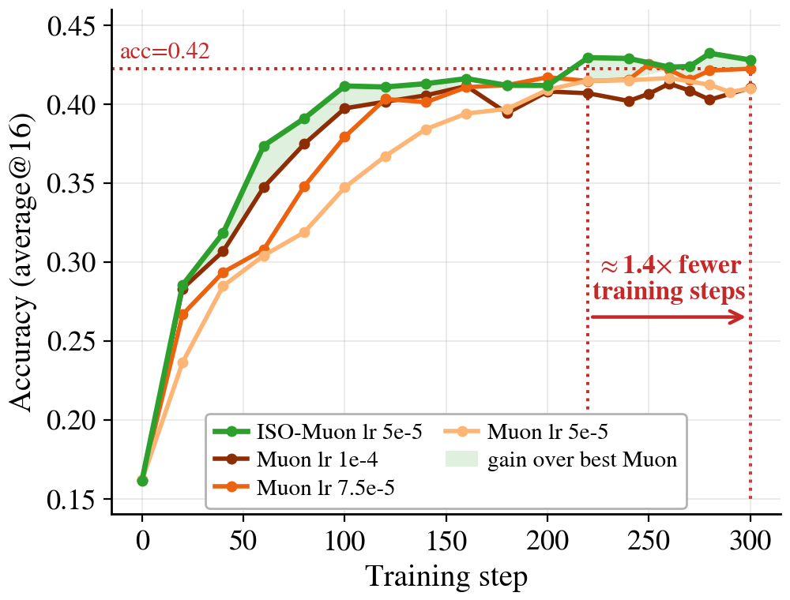
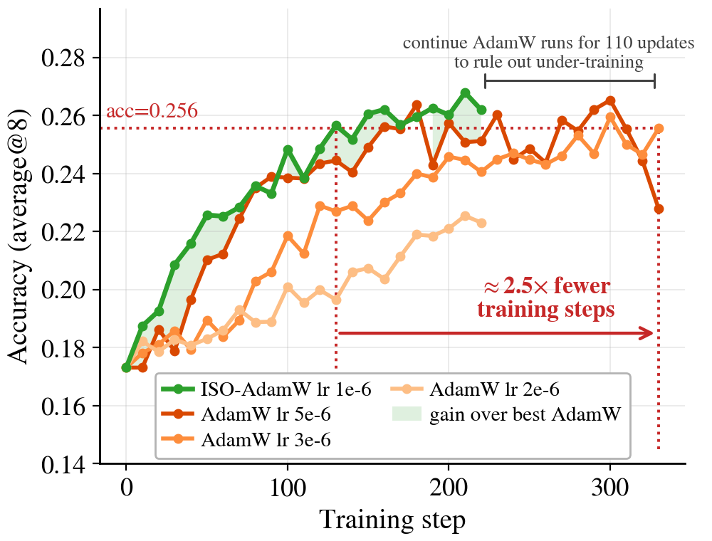

Teaser figure placeholder.
Export Figure 1 from the paper PDF and save it as static/images/teaser.png
(e.g. pdftoppm -png -r 220 -f 2 -l 2 ISO_arxiv.pdf, then crop the figure).
From spectral inheritance to Isospectral Optimization.
Unconstrained RLVR changes both singular frames while the weight spectra stay close to their base values — and restoring the base spectrum
Σ0 costs almost nothing.
ISO turns this regularity into an inductive bias: reuse Σ0, optimize
(U, V) — offline as ISO-Merger and online as ISO-Optimizer.
TL;DR
RLVR barely rewrites the base model's singular-value spectra — the new capability lives in the singular frames.
We verify this functionally (you can put the base spectrum back, or never let it move, and keep the gains), and turn it into
ISO, a fixed-spectrum optimization stack: ISO-Merger composes shared-base RL experts with no data, rollouts, gradients, or distillation,
and ISO-Optimizer runs AdamW/Muon on the frames and reaches matched RLVR accuracy with up to 2.7× fewer training steps.
Observation → Function
Spectra stay: spectral inheritance in RLVR
Write each weight matrix as W = U Σ V⊤:
the spectrum Σ sets the scale of each singular mode, the frames
(U, V) set its output/input directions.
Across RLVR runs — including a public reasoning run trained for 3,000+ updates — the learned checkpoint sits strikingly close to the
fixed-spectrum family of its base weights: the spectral residual is only ≈3% of the total weight displacement,
versus ≈35% for a comparable SFT transition. SFT reshapes the spectrum; RLVR doesn't need to.
Proximity alone could be a high-dimensional accident, so we test it functionally, with interventions in both directions:
restore the base spectrum after training, or never let it move at all.
Takeaway 1 — Spectral inheritance.
RLVR can reuse the base model's weight spectra rather than rewrite them:
restoring the base spectrum in the RL-trained frames preserves the gains, and training with the spectrum
frozen from step one still learns strongly. The acquired behavior lives in the frames.
The rebase experiment, interactive
Take an RLVR checkpoint (DeepSeek-R1-Distill-Qwen-1.5B → Nemotron-Research-Reasoning-Qwen-1.5B),
keep its learned frames(URL, VRL) fixed, and interpolate only the spectrum
between the base model's Σ0 and the RL-trained ΣRL.
At α = 0 the RL model's spectrum is fully replaced by the base spectrum.
Drag the slider — the accuracy doesn't care:
Spectrum interpolation with RL-trained frames fixed
Each of the six slider stops is a separately evaluated model. Only the singular values change; the frames never move.
W̃(α) = URL
[ 1.00 · Σ0
+
0.00 · ΣRL ]
VRL⊤
α = 0.0
α = 0 · base spectrum Σ0 restoredα = 1 · original RL checkpoint
Average score at current α
–
Base model (pre-RL)
37.6
average over the 5 math benchmarks
Δ vs. full RL checkpoint
–
≈ 0 at every α: the spectrum change was never needed
score of W̃(α) — RL frames, interpolated spectrum base model before RLVR
Show the evaluated anchor data (Fig. 4a)
Benchmark
Base
α=0.0
α=0.2
α=0.4
α=0.6
α=0.8
α=1.0 (RL)
Restoring the base spectrum preserves RLVR's gains at every α.
A spectrum-only parameterization (frames frozen, singular values trainable) likewise fails to learn comparably —
what RLVR needs to change is the frames.
The mirror test: graft the RL spectrum into the SFT frames
Run the same interpolation in the opposite direction: fix the frames of the SFT model(USFT, VSFT) and blend the spectrum toward the RL-trained
ΣRL. If RLVR's gains lived in the spectrum, scores should climb toward the RL
checkpoint as α grows. They don't move at all:
Spectrum interpolation with SFT frames fixed (mirror control)
Each of the six slider stops is a separately evaluated model. The dashed marks show the full RL checkpoint — the bars never approach them.
W̃(α) = USFT
[ 1.0 · ΣSFT
+
0.0 · ΣRL ]
VSFT⊤
α = 0.0
α = 0 · original SFT modelα = 1 · SFT frames + full RL spectrum
Average score at current α
–
Full RL checkpoint
46.0
average over the same 7 benchmarks
Δ vs. RL checkpoint
–
the RL spectrum alone buys none of the gains
score of W̃(α) — SFT frames, interpolated spectrum full RL checkpoint (Nemotron, ~3k RLVR updates)
Show the evaluated anchor data
Benchmark
RL ckpt
α=0.0
α=0.2
α=0.4
α=0.6
α=0.8
α=1.0
The RL spectrum in SFT frames buys nothing — at any mixing ratio.
All 7 metrics stay pinned at the SFT level (α-sweep range ≤ 3.2pp, within Mean@n sampling noise; the α=0 endpoint
reproduces the original SFT model to ≤ 0.8pp). The spectra themselves barely differ — relative drift
‖ΔΣ‖/‖Σ‖ ≤ 0.04% across all 198 matrices. Together with the panel above, the evidence runs in both directions:
useful RLVR progress is carried by singular-frame motion, not by spectral rescaling.
Structure
Frames move — and both must stay adaptable
If the spectrum can be inherited, which variables must remain free? We reconstruct RL endpoints under four structural restrictions
and measure how much of the checkpoint update each one fails to explain
(two-stage VLA RL pipeline, transition W0 → W2, median across layers):
Remix within both incoming subspaces (umix)87%
Freeze output subspace only (uL)45%
Freeze input subspace only (uR)42%
Fix the spectrum, adapt both frames (uiso)1.8%
Fraction of the checkpoint update left unexplained by the best reconstruction in each class (lower is better; 100% = no change explained). The same pattern recurs across sequential RL stages with distinct objectives.
Takeaway 2 — Fix the spectrum, keep both frames adaptable.
Even permissive remixing inside the incoming subspaces, or freezing just one side, leaves a large share of the update unexplained.
Retaining the incoming spectrum while adapting both frames leaves only ~2% — directly motivating ISO's parameterization
W(U,V) = U Σ0 V⊤.
Method
ISO: Isospectral Optimization
Inherit the spectrum, optimize the frames:W(U, V) = U Σ0 V⊤,
U, V on the Stiefel manifold.
U — output frame · moves
×
σ1σ2⋱σq
Σ0 — base spectrum · frozen
×
V⊤ — input frame · moves
The tangent space TUt rides along the trajectory: at each step the base optimizer takes a
tentative update in the tangent plane, and the
polar retraction puts the iterate back on the manifold — so every
Wt = Ut Σ0 Vt⊤ keeps the base spectrum exactly.
Every represented matrix shares the base spectrum Σ0 exactly; all learning and composition happen in the frame
coordinates, with a polar retraction restoring orthonormality. ISO is a stack, not a single optimizer — one principle, two instantiations
spanning the RLVR workflow:
Offline
ISO-Merger — compose RL experts without rollouts
Take specialists trained from a shared base, express each expert as a displacement of the singular frames
(project → mask trailing modes → solve unit-retention coefficients → retract), and rebuild one fixed-spectrum model.
No post-merge data, rollouts, gradient updates, or on-policy distillation.
Online
ISO-Optimizer — fixed-spectrum RLVR training
Apply your existing optimizer — AdamW or Muon, states and all — to (U, V) instead of
W, keep Σ0 frozen, and retract after each step —
a strictly more constrained model class.
Fewer training steps, higher rewards.
Results · Offline
ISO-Merger: data-free expert composition
Merging RLVR specialists in fixed-spectrum frame coordinates recovers their complementary capabilities — with zero post-merge compute.
Recovery of each specialist's own score by the single merged model:
Qwen2.5-7B-Instruct — 3 RL experts
Coding106.2%
Tool use99.8%
Memory99.5%
DeepSeek-R1-Distill-Qwen-1.5B — 2 RL experts
Coding101.4%
Math101.7%
Recovery of specialist score (%); the vertical mark is 100% = the original specialist itself.
Means over 3 independent stochastic evaluation runs (standard deviations in the paper). Expert rows shaded blue; bold marks the best expert and the best merged result per column.
DeepSeek-R1-Distill-Qwen-1.5B · coding + math experts
Method
LiveBench
LCB v5
AIME24
AIME25
AMC23
Minerva
Olympiad
Avg
ACC
UT
ACC
UT
@32
@32
@8
@4
@4
Base (DS-R1-Distill-1.5B)
17.99
26.24
16.82
20.85
30.90
23.40
63.15
27.33
43.11
29.98
Archer2.0 (coding)
26.66
37.26
26.90
38.99
42.05
28.02
73.44
30.09
49.99
39.27
JustRL (math)
22.23
31.85
23.05
30.18
53.16
36.84
82.78
34.71
55.67
41.16
Task Arithmetic
26.22
35.82
26.70
36.58
50.83
33.09
80.82
33.00
54.31
41.93
TIES
26.37
36.75
27.62
39.45
54.51
35.76
82.13
33.76
55.36
43.52
TSV
26.40
36.83
27.61
40.01
53.16
35.17
80.97
33.88
54.68
43.19
RAM
26.71
36.99
27.18
38.83
54.20
35.80
82.28
34.10
55.54
43.51
OrthoMerge-G-TIES
26.46
36.73
27.74
39.86
54.55
35.14
81.88
33.55
55.47
43.49
ISO-Merger (ours)
25.52
36.42
27.84
41.84
55.00
37.81
83.53
34.77
56.64
44.38
ISO-Merger achieves the strongest aggregate performance among the compared data-free merging methods on both backbones, and improves worst@4 by 1.62 / 1.36 points — more consistent capability recovery, not just a better mean.
Results · Online
ISO-Optimizer: same reward signal, fewer steps, higher accuracy
ISO-AdamW uses a single learning rate everywhere (7.5×10−7), while the weight-space baselines get a full
learning-rate sweep. On Qwen3-8B-Base, ISO-AdamW reaches AdamW's 270-step accuracy by step 100 —
≈2.7× fewer training steps — and keeps improving to 0.509 vs. 0.495:

Qwen3-8B-Base, DeepMath-103K. Aggregate average@16 over AIME24/25, AMC23, Minerva, OlympiadBench.
Extending AdamW 60 more steps yields no further gain — the gap is not under-training.

Qwen3-1.7B-Base — highest final aggregate accuracy vs. the full AdamW sweep.

Qwen3-4B-Base — matches the best AdamW with ≈2.2× fewer steps, then keeps improving.

ISO-Muon — the construction transfers across base optimizers: ≈1.4× fewer steps than tuned Muon.

Coding (DS-1.5B, ArcherCodeR) — leads tuned AdamW on LiveCodeBench; extended baselines never match its peak.
Math RLVR (average@16, DeepMath-103K)
Model
Method
AIME24
AIME25
AMC23
Minerva
Olympiad
Avg
Qwen3-1.7B-Base
Base
3.75
1.25
23.04
18.49
18.43
12.99
AdamW
13.96
12.92
43.45
32.17
39.25
28.35
Muon
16.25
8.33
43.60
32.24
38.06
27.70
ISO-AdamW (ours)
16.04
11.04
44.50
33.11
39.01
28.74
Qwen3-4B-Base
Base
6.88
5.00
25.45
20.97
22.43
16.15
AdamW
25.21
20.42
63.55
45.40
53.87
41.69
Muon
25.42
19.58
63.63
46.51
56.02
42.23
ISO-AdamW (ours)
27.29
23.13
65.74
45.15
55.99
43.46
Checkpoint with the highest aggregate score among the final three evaluations, per run. Baselines use the best learning rate from their sweep.
Overhead: the FP64 SVD polar retraction adds ≈86 s per actor update on Qwen3-4B — only ≈7% of end-to-end RL step time,
and amenable to overlap with rollout generation in asynchronous RL systems.
Reference
Citation
@article{zhu2026iso,
title = {ISO: An RLVR-Native Optimization Stack},
author = {Zhu, Hanqing and Cong, Wenyan and Sha, Zhizhou and Mukherjee, Sagnik and
Song, Xinyuan and Gonz{\'a}lez-Mart{\'i}nez, David and Wu, Xiaoxia and
Tian, Yuandong and Liu, Shiwei and Pan, David Z. and Wang, Zhangyang},
journal = {arXiv preprint},
year = {2026}
}